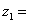

Једностепени редуктор - улазни подаци
Снага коју преносе зупчаници:  80
80 
Број обртаја погонског зупчаника:  700
700 
Преносни однос:  2
2
Број зубаца погонског зупчаника:  25
Угао нагиба бочне линије зубаца на подеоном кругу:  5 °
5 °
Смер нагиба бочне линије погонског зупчаника: десни
Фактор ширине и пречника зупчаника: φ = 0.6
Коефицијент померања профила:  0.4
0.4
Коефицијент померања профила:  0.2
0.2
Квалитет израде зупчаника: 
Фактор спољних динамичких сила:  1.25
1.25
Материјал зупчаника: Č.1220
Материјал вратила: Č.0545
Положај зупчаника између лежаја: симетричан
Веза вратила и зупчаника: нормални клин без нагиба JUS M.C2.060
Потребан радни век лежаја: 30000 h
Остали параметри се усвајају према препорукама.
Растојање између лежаја: 160 
Растојање између лежаја:
Потребно је:
- одредити модул зупчаника на основу чрстоће,
- проверити степене сигурности бокова и подножја зубаца,
- израчунати геометријске величине озубљења,
- моделирати погонски и гоњени зупчаник,
- урадити радионичке цртеже зупчаника,
- урадити анализу сила и шему оптерећења вратила редуктора,
- остале параметре усвајати према препорукама (конструктивно),
- приложити све потребне табеле и дијаграме коришћене при прорачуну.
Литература - извори знања:
- Машински елементи I, Спасоје Драпић- Београд.
- Машински елементи II, Спасоје Драпић- Београд.
- Основе конструисања за IV разред, Спасоје Драпић- Београд.
- Конструисање за IV разред, Спасоје Драпић- Београд.
- Инжењерско машински приручник 2, завод за уџбенике и наставна средства Београд 1992. год. група аутора.
Анализа сила на зупчаницима:


"Word"-ов документ, I страна - download
"PDF" документ, поставка задатка - download
"Excel"-ов документ, прорачун без вредности - download
"PDF" документ, пример прорачуна - download
"PDF" документ, таблице за прорачун - download
"PDF" документ, таблице за толеранције - download
"PDF" документ, изведени обрасци за прорачун зупчаника - download
Напомена: "PowerPoint Show" презентација, Анализа сила... снимите на свој рачунар па покрените "PowerPoint" презентацију, највероватније неће радити ако идете да исту отворите преко "PowerPoint"-а, када Вас пита приликом клика на линк изнад...